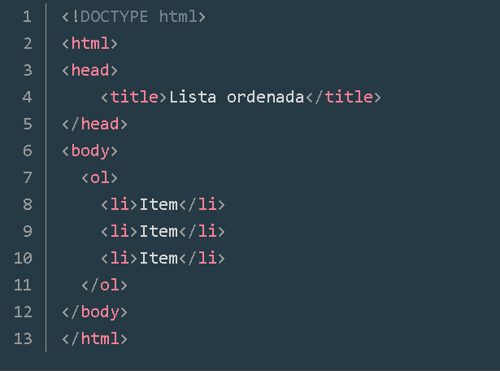

-Uma lista ordenada se inicia e se encerra respectivamente através das tags ol e /ol.
-Um item da lista se inicia e se encerra respectivamente através das tags li e /li.
-Dentro de um item podemos utilizar qualquer elemento HTML que quisermos como títulos, parágrafos, imagens e até mesmo outras listas (chamamos de aninhamento).
Abaixo temos o código da lista ordenada:
Uma lista ordenada pode ser identificada pelo seu marcador e, por padrão, ele vem definido como ordenação numérica. Podemos também alterar o padrão por outros quatro tipos: numerais romanos ou ordenação alfabética e ambos os casos podem ser usados na forma minúscula ou maiúscula.


Podemos definir um ponto de partida para a classificação dos itens, dessa forma a numeração começará a partir de um número especificado no atributo start.

Através do atributo reversed informamos que o comportamento da nossa lista será de maneira reversa.

A utilização de listas ordenadas pode ser útil, por exemplo, se quisermos definir um cronograma de estudos (sabemos que existem pré-requisitos entre um assunto e outro).